Clients & partners I have worked with

About Me
Enterprise software engineer focused on health and insurance workflows
I design and deliver robust digital systems that simplify complex business processes. My work combines architecture, implementation, and operational execution to create reliable platforms for reimbursement, medical coverage, claims management, and payment lifecycle operations.
Domain Focus
Insurance and healthcare systems with enterprise reliability and compliance-oriented workflows.
Execution Model
Owns scoping, planning, development, testing, and deployment across multi-client programs.
Platform Strength
Builds full-stack systems with secure APIs, strong data models, and production-grade operations.
Leadership Impact
Coordinates teams, manages risk, and drives technical decisions while contributing hands-on.
Education
Software Architecture Engineer
Diploma - ESPRIT - Tunis | 2018 - 2023
Work Experience
Delivered and led software initiatives in insurance and healthcare
Software Developer
2023Developed workflows for reimbursement and contribution systems. Built backend services, queries, and unit tests. Integrated new features into existing enterprise platforms.
Team Lead
2023 – presentSupervise and deliver solutions for 3 clients in insurance and healthcare. Manage project lifecycle: scoping, planning, development, testing, and deployment. Coordinate teams, manage risks, and drive technical decisions. Contribute hands-on through APIs, deployments, and database management.
Software Developer Intern
Built a multilingual CMS (MERN stack) for Orange Foundation Tunisia. Implemented back-office content management and CI workflows.
Skills & Expertise
Personal, professional, and communication capabilities
Personal Skills
Leadership, management skills, time management, communication skills, and critical thinking.
Professional Skills
Full-stack engineering and workflow design for secure, scalable enterprise systems.
Languages
Strong communication across multicultural teams and stakeholders.
Key Contributions & Responsibilities
Hands-on delivery across architecture, security, data, and operations
Designed and delivered full-stack enterprise applications using Spring Boot, Vaadin, React, and Node.js, enabling end-to-end workflows for claims processing, reimbursement, preapproval, and payment management.
Led and coordinated projects for multiple clients in parallel, defining scope, requirements, and delivery roadmaps while ensuring alignment with business needs.
Engineered state-driven workflow systems managing claims, financial operations, and batch processing with validation checkpoints and audit-ready flows.
Developed and secured RESTful APIs for web and mobile applications, including JWT-based authentication and scalable session management strategies.
Implemented role-based access control (RBAC) using Spring Security to secure multi-actor platforms (back-office, providers, insurers).
Modeled and optimized relational databases (SQL/MySQL), writing advanced queries for high-performance data access and reporting.
Built analytics dashboards and reporting systems, providing real-time insights into financial and operational performance.
Developed rule-based engines handling insurance logic such as coverage limits, eligibility rules, and reimbursement validation.
Implemented document generation and reporting pipelines (PDF exports) and file management systems with integrity controls.
Automated operations using scheduled jobs (batch processing, backups, maintenance), improving system reliability.
Contributed to DevOps practices, including Git branching strategies, CI workflows, and deployments to pre-prod and production environments.
Produced and maintained API documentation (Swagger/OpenAPI) to streamline frontend and mobile integrations.
Supported functional testing, requirement analysis, and technical specifications, ensuring high-quality delivery.
Coordinated with stakeholders, managed risks, tracked progress, and ensured adherence to timelines and budgets.
Tools & Technologies
Core stack used in delivery
Java
Spring Boot
Vaadin
React
Node.js
Python
MERN Stack
SQL
MySQL
Git
CI Workflows
Swagger
OpenAPI
Spring Security
JWT
Java
Spring Boot
Vaadin
React
Node.js
Python
SQL
Git
Contact
I build systems that simplify complexity and deliver real impact.
If you need a software engineer who can lead enterprise delivery and build secure, scalable systems for healthcare and insurance products, I am available to collaborate.